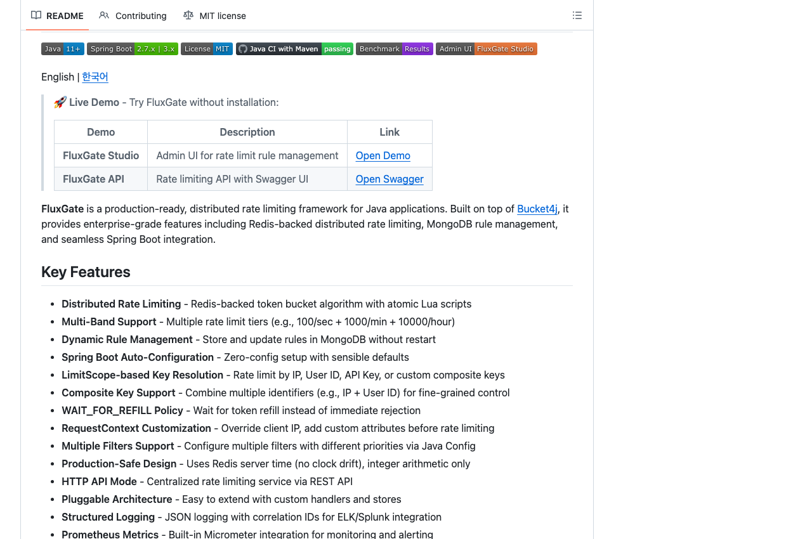

JVM DNS 캐싱과 커넥션 풀이 만날 때
라우팅 IP 변경 후 발생한 프로덕션 504를 JVM DNS 캐시와 커넥션 유지 관점에서 분석했습니다. 재현 코드와 영문판, 세미나 자료를 함께 공개했습니다.
기록으로 확인할 수 있는 것만 적었습니다
인증 서비스에는 도메인별 설정과 업체 비율을 조정하는 어드민을, 제휴 연동에는 동의 조회 · 배치 모니터링 · 접근 감사 화면을 함께 만들었습니다. 오픈소스도 라이브러리 옆에 스타터와 관리 화면, 문서를 뒀습니다.
트랜잭션 경계, 중복 판정, 실패 기록은 각각 지키는 범위가 다릅니다. 실패를 보관하는 구조를 Outbox라고 부르지 않고, 팀이 함께 한 일을 제가 한 일처럼 말하지 않습니다. 프로젝트 글마다 한계를 같이 적은 이유입니다.
본인확인 식별정보 배경지식, 인증 연동, 메일 발송 모니터링, 배포 절차 같은 운영 문서를 써 왔습니다. IP 변경으로 생긴 장애는 JVM DNS 캐시 관점에서 재현해 글과 세미나로 공유했습니다.
무엇을, 왜, 어디까지 만들었는지
삼성카드 첫 적용
지마켓·옥션 회원과 외부 파트너를 잇는 제휴 연동의 첫 서비스입니다. 두 앱에서 발생하는 동의를 맞추는 일부터 정합 배치, 탈회, 리워드, 그리고 운영팀이 쓰는 어드민까지 한 묶음으로 만들었습니다.
지마켓 · 옥션 · ESMPLUS 공통 인증
사이트와 인증 수단마다 흩어져 있던 인증 기능을 하나의 서비스로 모았습니다. 인증 기능 자체뿐 아니라, 어떤 서비스가 어떤 인증을 쓸지와 인증업체 비율을 운영자가 어드민에서 조정할 수 있게 만드는 데까지가 이 프로젝트였습니다.
지마켓 · 옥션 · ESMPLUS 통합 약관
지마켓 · 옥션 · ESMPLUS 세 사이트에 따로 흩어져 있던 약관을 한 서비스에서 관리하게 만든 프로젝트입니다. 약관을 코드 · 버전 · 시행일자로 다루는 모델부터, 세 사이트의 공개 약관 페이지, HTML 에디터가 붙은 어드민까지 한 묶음으로 만들었고 지금도 운영 중입니다.
KISA 전자문서유통중계자 인증 · 인프라부터 서비스까지
법적 효력을 갖는 전자문서를 주고받는 유통중계자 서비스를 처음부터 만들었습니다. 서버 22대의 이중화 인프라, API · 관리자 · 배치 세 서비스, CI/CD와 무중단 배포, 그리고 KISA 인증 심사 적합과 가오픈까지 — 입사 만 1년 차에 2인 팀에서 거의 전부를 직접 했습니다.
Redis 기반 분산 Rate Limiting
여러 인스턴스로 늘어난 서비스가 같은 허용량을 나눠 쓰게 하는 분산 Rate Limiting 라이브러리입니다. 라이브러리만이 아니라 Spring Boot 스타터, 규칙을 관리하는 어드민(FluxGate Studio), 문서 포털까지 만들어 Maven Central에 배포했습니다.

2022.09 — 현재
2026.01 — 2026.06
삼성카드 첫 적용 · 2인 팀 · 주요 개발자
2025 — 현재
지마켓 · 옥션 통합 백엔드 · 팀 공동 설계 · 제휴 · 인증 모듈 개발, 게이트웨이 도입 참여
2024.01 — 2024.12
지마켓 · 옥션 · ESMPLUS 공통 인증 · 3인 팀 · 설계 및 핵심 구현
2024.06 — 2024.12
지마켓 · 옥션 · ESMPLUS 통합 약관 · 4인 팀 · 주요 개발 · 사내 리뷰 발표
2023 — 2024
로그인 장애 이후의 근본 대응 · 팀 프로젝트 · 원인 분석 · 전환 설계 기여
2022.10 — 2023.01
지마켓 · 옥션 판매자 가입 통합 · 4~5인 팀 · 개발 · 운영 담당
2020.07 — 2022.09
2021.09 — 2022.09
KISA 전자문서유통중계자 인증 · 인프라부터 서비스까지 · 2인 팀 (팀장 + 본인) · 설계 · 인프라 · API · 관리자 · 배치 — 거의 전 영역을 직접 담당
2020.07 — 2021.09
상점 관리자 개편 · 2~3인 팀 · 개발 · 운영
Redis 기반 분산 Rate Limiting 라이브러리와 규칙 관리 어드민. Maven Central 배포.
Nginx + ModSecurity + OWASP CRS 기반 웹 방화벽. 막은 요청을 실시간 트랙(Go · InfluxDB)과 분석 트랙(Kafka · ksqlDB · Elasticsearch)으로 나눠 처리하고, 대시보드에서 룰을 고치면 Nginx에 무중단 반영.
Spring Authorization Server 기반 회원 · 인증 서비스. 코어 · OAuth2 · 소셜 로그인 · 통합 API 모듈로 나누고 Prometheus 모니터링을 붙인 개인 프로젝트. 현재는 서비스를 내린 상태.
라우팅 IP 변경 후 발생한 프로덕션 504를 JVM DNS 캐시와 커넥션 유지 관점에서 분석했습니다. 재현 코드와 영문판, 세미나 자료를 함께 공개했습니다.
개념과 환경 설정부터 Reader · Processor · Writer, 이메일 발송 배치 구현, 멀티스레드와 파티셔닝을 이용한 성능 최적화까지.
메시징 시스템을 예제로 Factory · Strategy · Template Method · Chain of Responsibility 패턴이 필요한 순간을 정리했습니다.
채용, 협업, 기술 이야기 모두 환영합니다. 이메일로 연락 주세요.